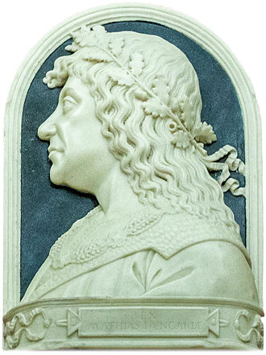

Cetatea Devei este considerată una dintre cele mai importante fortificaţii medivale din Transilvania. A fost stăpânită de voievozi, de principi, de conti şi de ducese. A fost dată în dar, vândută sau bombardată. Fiecare a lăsat ceva în urma sa. Mai un zid de de apărare, mai o încăpere, mai o sală de bal sau chiar au extins cetatea cu un etaj întreg. Şi-au dorit ca ea să nu fie utilizată doar pentru apărare şi întâlniri ocazionale, ci să servească drept locuinţă. Nu una austeră, ci una de lux.
Astăzi, ruinele sale sunt vizibile de la depărtare, graţie poziţionării sale strategice, pe un vârf de deal care domină Valea Mureşului şi principala arteră de legătură a României cu centrul şi vestul Europei. Cetatea a fost ridicată în secolul al XIII-lea, dar urmele de locuire sunt mult mai vechi: există descoperiri care datează din neolitic sau epoca bronzului. Prima menţiune documentară care face referire la Cetatea Devei datează din anul 1269
Pestera Bolii
Peștera Bolii este situata în partea de nord a orașului Petroșani, la 6 km de acesta, pe drumul care leagă Valea Jiului de Tara Hațegului, în locul unde se întâlnesc Munții Retezatului cu cei ai Sebeșului.
Numele peșterii vine probabil de la familia Bolia care a avut încă din secolul XV-lea proprietăți de pământ și păduri în zonă.Peștera începe acolo unde Pârâul Jupâneasa se pierde în pachetul de calcarele jurasice printr-un portal spectaculos de 20 m la baza si 10 m înălțime. Galeria principala a peșterii este în general de mari dimensiuni, pe alocuri lărgindu-se în adevărate săli spațioase. Formațiuni de scurgere apar în locurile înalte si pe tavanul galeriei. Pe o lungime de 466 m galeria coboară doar 3 m. La ieșirea din peșteră pârâul poarta numele de Galbina
Castelul Corvinilor
Scurta Istorie
Prima fortificatie de piatra de la Hunedoara, a fost datata de majoritatea cercetatorilor însecolul XIV (Gheorghe Anghel), desi exista specialisti care atribuie castrul regal primei jumatati a secolului XV (Elemér Mályusz, Adrian Andrei Rusu, Radu Lupescu). Aceasta prima fortificatie avea o forma elipsoidala, cu capetele de nord si sud ascutite, marcate de piatra de talie. Zidurile, cu grosimi de pâna la 2 m, au fost construite din blocuri de calcar dolomitic si piatra de râu, direct pe stânca nativa. Cercetarile anterioare primului razboi mondial au aratat faptul ca în zona nordica au existat doua încaperi de forma triunghiulara, unul dintre acestea fiind probabil un turn donjon, cu analogii în zona franceza si germana a secolelor XIII-XIV
Proprietari
Ioan de Hunedoara

Matei Corvin Beatrice FrangepanGeorge de Brandenburg Emeric TökölyElisabeta Silaghi
Legendele Castelului
Repere Arhitectonice
Mobilier
Despre mobilierul originar nu detinem date concludente, în ceea ce priveste calitatea, volumul si stilul acestuia. Banuim ca, având în vedere posibilitatile financiare ale familiei Corvin, interioarele castelului erau mobilate cu cle mai rafinate creatii ale epocii. Mobilierul de pâna în secolul XVI a fost transferat în Germania, la Anspach de catre Georg de Brandenburg, iar de acolo ajunge în secolul XVIII în mare parte în colectiile imperiale. Mobilierul expus în prezent reuneste piese valoroase, apartinând unor scoli si curente diverse, începând cu exponate de factura gotica , renascentista , completate de creatii realizate în stil ecclectic.
Instalatii de foc
Instalatiile de foc originare au fost în mare parte distruse începând cu secolul XIX, respectiv cu prima mare lucrare de restaurare. Sursele documentate, dublate de informatia extrasa pe cale arheologica demonstreaza ca monumentul detinea sobe de caramida pentru spatiile comune (bucatarii, camere de dormit, spatii rezervate soldatilor), completate de sobe cu cahle , resturile acestor instalatii fiind identificate în camera de aur si în sacristia capelei. În decursul cercetarilor din secolul al XIX-la în Groapa Ursilor a fost descoperita o cahla smaltuita reprezentând un cavaler în turnir, acest tip de descoperire atestând existenta în castel a unor sobe cu cahle de un deosebit rafinament artistic. Unul dintre cele mai frumoase seminee din Transilvania se gaseste în turnul Capistrano, realizat dupa regulile stilului gotic, faza târzie
Obiecte cu destinatie particulara
Dintre piesele valoroase la acest capitol amintim doua prasele de cutit decorate cu reprezentari de costum nobiliar , tipic cumpenei dintre secolele XVI si XVII, costum care ilustreaza renasterea matura.
Voi ati vizitat ale obiective turistice in aceasta locatie? Adaugati mai jos :D